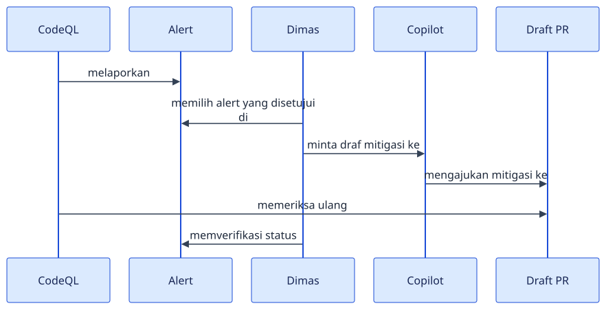

S10 / SKENARIO
CodeQL dan mitigasi
Gunakan fixture bila tidak ada alert hidup. Jangan menyebut pemindaian sebagai autofix.
Durasi 8 menit · estimasi latihan
Cerita tim
Code scanning menemukan 600 alert. Dikirim sebagai spreadsheet ke dev. Dev: "tidak ada waktu". AppSec: "wajib untuk audit". Enam bulan kemudian masih 550.
Yang disiapkan di repo
P10 — fixture laporan temuan berlabel ilustrasi. Kode berjalan tidak sengaja dilemahkan dan tidak memasang paket ber-CVE sebagai target latihan.
Lihat file dan kontrak
docs/fixtures/S10-code-scanning.md
Tinjau hasil scan → Mitigasi terverifikasi bila ada alert
Pilihan solusi
Alert code scanning → assign ke Copilot → agent perbaiki → jalankan ulang CodeQL untuk validasi → draft PR (bisa hingga 25 alert dalam satu PR).

Baca alur sebagai teks
- CodeQL → melaporkan → Alert
- Dimas → memilih alert yang disetujui di → Alert
- Dimas → minta draf mitigasi ke → Copilot
- Copilot → mengajukan mitigasi ke → Draft PR
- CodeQL → memeriksa ulang → Draft PR
- Dimas → memverifikasi status → Alert
Langkah demo
- Baca issue latihan dan kriteria selesai.
- Gunakan prompt atau perintah berikut. Prompt atau perintah
gh api repos/sandy-gunawan/agenticSDLC/code-scanning/default-setup - Periksa hasil: Gunakan fixture bila tidak ada alert hidup. Jangan menyebut pemindaian sebagai autofix.
Before / After
Belum di-capture · S10-before.png
Belum di-capture · S10-after.png
- Baseline
- Tinjau hasil scan
- Target setelah latihan
- Mitigasi terverifikasi bila ada alert
- Verifikasi
- Gunakan fixture bila tidak ada alert hidup. Jangan menyebut pemindaian sebagai autofix.
Data belum tersedia. Belum ada nilai untuk diplot.
- Before
- Belum diukur
- After
- Belum diukur
Fixture keamanan bukan alert dan tidak masuk hitungan.
Manfaat untuk tim
- Backlog security turun drastis tanpa menambah beban dev; AppSec jadi reviewer, bukan pengejar.
Bukti yang bisa diperiksa
- Issue GitHub · S10
S10-01-assign.png· belum di-captureS10-02-pr-autofix.png· belum di-capture
Screenshot dan metrik yang tidak tersedia tidak dianggap sebagai hasil live.
Ulangi latihan
Jalankan dari root repo latihan. Reset hanya menyentuh worktree lokal yang bersih.
npm run reset